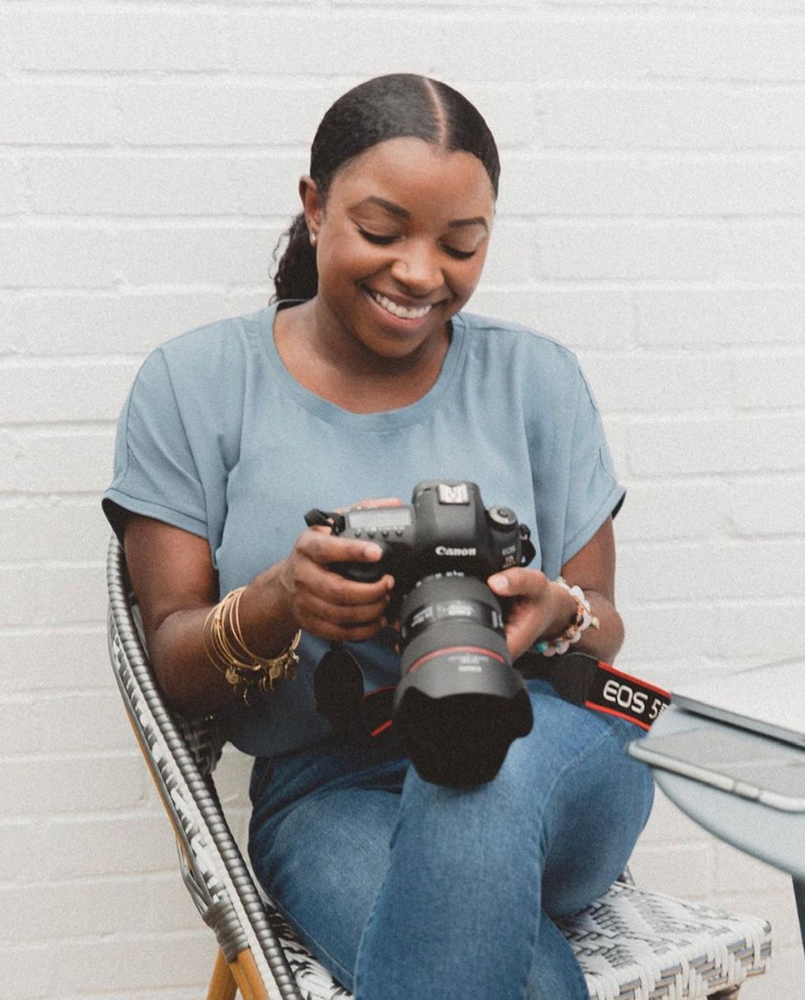

Ivy Awiti, 26years old. Lead photographer in the team. She has a degree is communications and has been doing this since she started luniversity. Next level studios was her dream.
Mary Njoroge, 28years.Lead videographer. She has a degree in journalism. She has had a passion for this ever since she was 10. She grauated 5 years and has been perfecting her skills ever since.
Aisha Mbuvi, 27 years old. Lead editor in the company. She has a diploma in journalism. She had a passion for video editing. Later on in her career she started editing both videos and pictures. She has a 6 years experience.
Emma Ndugu, 24 years old.Lead graphic designer . Emma started graphics design as a hobby after finishing highschool. She then realised that she haad a passion for this. it is then that she decided she would become a graphic designer.